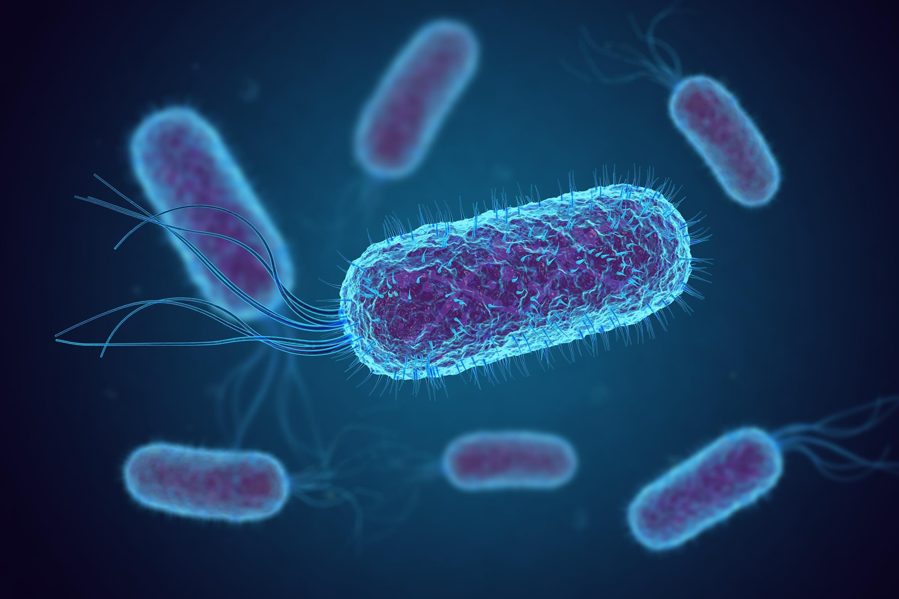

Reasons Behind Algal Blooms
Farm Runoffs
Fertilizer using nitrates can mix with water sources due to excess ammounts that can be washed away easily.

Sewage Leaks
Natural nitrate forms can be found, such as nitrate producing bacteria. However, these small amounts pose few threats.
Increasing Temperatures
Irrigation systems can act to spread pollutants into water sources, such as pushing chemicas with nitrtes into drains.
Natural Blooms
Poor manmade sources, like wells, can tap into natural nitrate buildups underground, releasing nitrates into water.

Contact
It is always best to contact authorities and report high nitrate concentration sources, for your safety and the safety of others.